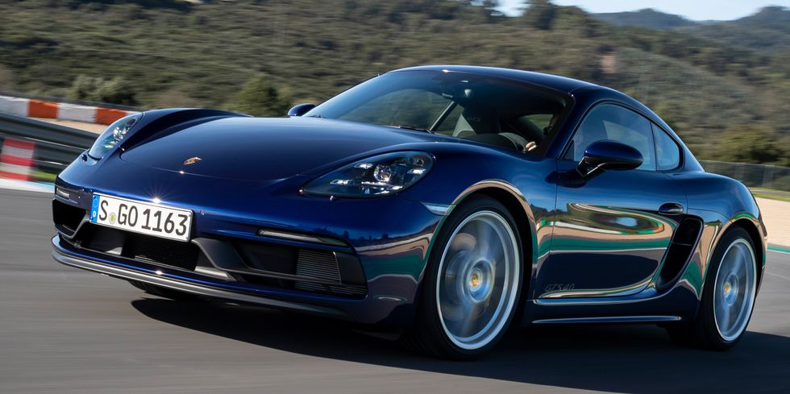

Porsche 718 Cayman
The 2021 Porsche 718 Cayman captures the same physical and emotional excitement of driving that supercars do. This coupe and its convertible sibling—the 718 Boxster, which we review separately—provide unrivaled driver engagement among sports cars. The Cayman's otherworldly chassis provides an open line of communication between the driver, the car, and the road. To create the 718, Porsche knits together strong brakes, an unflappable suspension, and a steering system rich with feedback. The result is so good that both 718 body styles made our 2021 10Best list. The brand's flawless automatic and manual transmissions and potent engines—particularly the melodic flat-six—complete the picture. While the 2021 Cayman costs more than its distinguished rivals, the Chevy Corvette and Toyota Supra, it's still the most focused and satisfying choice in the segment.